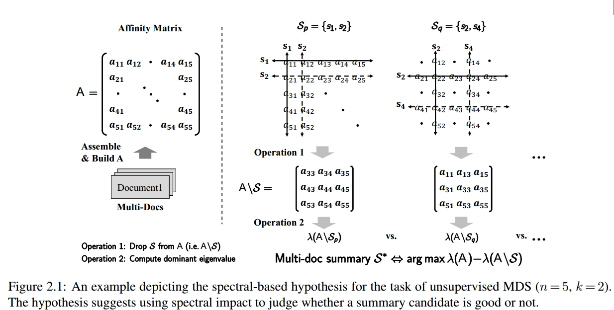
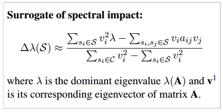
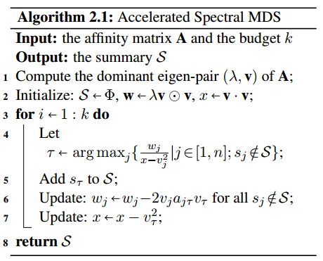
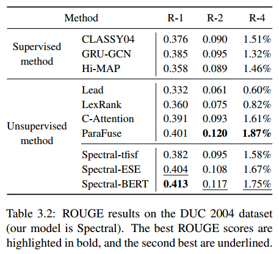
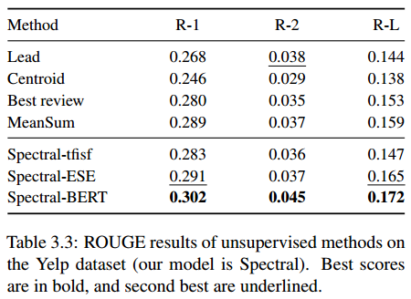
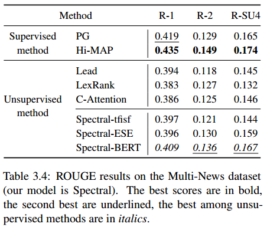
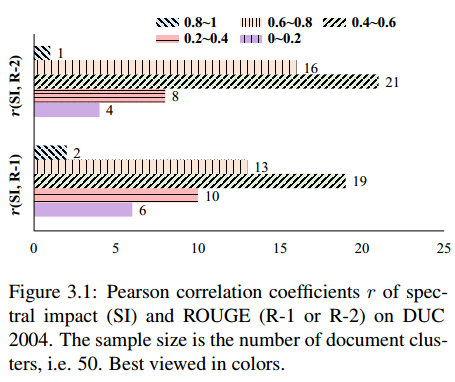

来源：Proceedings of the 2020 Conference on Empirical Methods in Natural Language Processing, pages 435–445 （EMNLP2020)
一句话不看版：本文从谱方法的角度来解决多文档摘要问题。基本假设是：如果去掉某摘要集合对于原亲和矩阵的特征值扰动越大，说明该摘要集合越重要，因此越应该被选为摘要。
背景
- 多文档摘要目标是对围绕同一个话题或者事件的文档簇，生成一个简短的摘要。
- 本文提出基于谱的假设：候选摘要的质量与它的谱影响（spectral impact）有关联。而本文中的谱影响定义为丢弃该候选摘要造成的主特征值的扰动程度。即，丢弃该候选摘要对原亲和矩阵的主特征值的影响越大，说明该候选摘要重要性越大。
- 本文从三个角度验证了这个假设：semantic scaling，propagation dynamics，matrix perturbatior。
- 根据这个假设，将多文档摘要任务建模为谱影响的优化问题，并基于谱影响的近似代理，提出了较为高效的解决算法。
- 实验验证了（1）候选摘要的质量与谱影响正相关；（2）本文的谱方法取得了先进的性能。
本文方法与之前多文档摘要方法的不同点
Underlying hypothesis
本文方法与之前多文档摘要方法的基本假设不同。
例如：
- manifold-ranking-based方法的假设是好的摘要句子在低维的流形空间中排序较高。但是这种流形假设没有被直接验证。
- sparse-coding-based方法认为，原始文档能够表示为摘要句子的线性组合。然而这种认为是线性组合的思路，更可能是一种简化。
- 本文从谱的角度提出假设，认为好的摘要具有较高的谱影响。并且对该假设进行了验证。
Optimization objective
对于多文档摘要有很多优化目标，比如relevancy和non-redundancy。很多方法使用多种优化目标的组合，并用超参数将他们组合起来。本文的优化目标不使用超参数，因此更加紧凑。
Model complexity
对于模型的复杂度和可解释性通常需要权衡。例如，之前的基于深度神经网络的方法解释性不佳，因此没有明确的优化方向指导。本文的摘要模型基于提出的假设，能够在保持模型复杂度的同时，具有更好的可解释性。
模型
假设文档簇总共有n个句子，全局集合为$C=\{s_1,…,s_n\}$，候选摘要集合为$S$，是$C$的一个子集。每个句子之间的关系组成一个亲和矩阵（affinity matrix）：$\mathbf{A}=\{a_{ij}\}_ {n\times n}$。此外，矩阵$\mathbf{A}$的主特征值和对应的主特征向量为$\lambda(\mathbf{A})$ 和 $\mathbf{v}$。
从矩阵中丢弃一个集合，就是清空被丢弃元素对应的行和列。
例如从矩阵$\mathbf{A}$中丢弃集合$S$，意味着：
$$
\mathbf{A} \backslash S=\left\{\begin{array}{ll}
0, & s_{i} \in S \text { or } s_{j} \in S \\
a_{i j}, & \text { otherwise }
\end{array}\right.
$$
Spectral Hypothesis
当把文档簇表示为一个矩阵时，矩阵的谱（特征值集合）反映了文档的不同方方面，而主特征值则对应着最关键的方面。这也为进行摘要提供了启发。因此对于抽取式多文档摘要任务，本文提出了如下假设：
给定：亲和矩阵$\mathbf{A}$；候选摘要集合$S$，初始可能包含随机的句子。
定义：候选摘要集合$S$的谱影响定义为：丢弃$S$后对于矩阵$\mathbf{A}$的主特征值造成的扰动。即：$\Delta \lambda(S) \triangleq \lambda(\mathbf{A})-\lambda(\mathbf{A} \backslash S)$
假设：候选摘要$S$的质量与他的谱影响$\Delta \lambda(S)$有关系。
基于上面的假设，多文档摘要任务就变成了对于谱影响的优化问题：
$$
S^{*}=\underset{S \subseteq C}{\arg \max } \Delta \lambda(S), \quad \text { s.t. }|S| \leqslant k
$$
其中集合$C$表示全局句子集合，$k$表示摘要长度限制。
该目标具有两个性质：
（1）单调性：对于任意$S_1 \subseteq S_2$，有$\Delta \lambda(S_1) \le \Delta \lambda(S_2)$。
（2）归一性：$\Delta \lambda(\Phi)=0, \Delta \lambda(C) = \lambda(A)$。其中$\Phi$表示空集。
性质（1）指出，一个完整的摘要要比他的任何部分更好；性质（2）指出了一个候选摘要的合理的取值范围。
整个模型的示意图见图2。

Affinity Matrix
另一个问题就是如何得到Affinity矩阵了。亲和矩阵中的每个元素$a_{ij}$都表示句子$s_i$和句子$s_j$之间的关系。一种常用的方法就是计算句子对之间的相似度（如cosine相似度）来构造亲和矩阵。
本文采用了三种方法：Tf-isf，ESE，BERT。
同时，本文认为句子在文档中的位置也有影响，且前面的句子应该影响更大，因此为 亲和矩阵中的每个元素都乘以位置权重$1/(o_i+o+j)$，其中$o_i$时句子$s_i$在文中的位置。
Justifications of Hypothesis
这里从三个角度验证本文的假设。
Semantic scaling
亲和矩阵的主特征值决定了向量在语义空间中的伸缩。
n个句子每个句子表示一个维度，构成一个n维语义空间，该空间的每个轴代表一个句子。这样的话，亲和矩阵$\mathbf{A}_ {n\times n}$就可以看作是这个空间中的线性操作。而矩阵中的每个值$a_{ij}$就是调节从$i-th$轴到$j-th$轴的变换。
给定任意非零向量$\mathbf{x}$，变换后的向量$\mathbf{Ax}$，两者满足如下关系：
$$
||\mathbf{Ax}|| \le \lambda(\mathbf{A})||\mathbf{x}||
$$
这是一个上界，只有当$\mathbf{x}$是主特征值时，等式才成立。
这个性质表明，空间中任何向量的缩放不会超过$\lambda(\mathbf{A})$。因此，主特征值$\lambda(\mathbf{A})$反映了操作$\mathbf{A}$对空间中任意向量的缩放能力。当从$\mathbf{A}$中删除候选集合$S$时，$S$中涉及到的轴上的变换都被删除了，也就是说，对于那些被删除的轴方向上的缩放贡献都没有了，因此会损害操作$\mathbf{A}$的缩放能力。而当最好的摘要被删删除时，则会导致操作$\mathbf{A}$的能力损失最大。因此，主特征值表示了操作$\mathbf{A}$的缩放能力，可以被用来定位多文档摘要中句子的重要性。
Propagation dynamics
隔离摘要会导致信息传播的阻塞。
这种视角将亲和矩阵看作一个图，亲和度值$a_{ij}$则为图中节点i和j的边的权重，权重越高，越有利于信息的传播。
这里的问题就是，从少数几个种子句子开始进行信息传播能否形成大流行（pandemic）。例如在流行病学中，只有当病毒的传播值$R_0$大于1才有可能形成大流行。
许多之前的工作发现$R_0$值与主特征值是成比例的。特征值小则对应的$R_0$值也小，从而阻碍了信息的传播。对于多文档摘要任务来说，当最好的摘要被隔离了之后，剩下的文档则会更加难以传播。
本文的假设与该发现一致。因为删除最佳的候选摘要$S^{*}$会导致主特征值减少的最大，从而传播能力降低最大。
Matrix perturbation
谱影响包含了多文档摘要中的相关性和非冗余性目标。
为了分析谱影响的特点，作者使用first-order matrix perturbation theory：
$$
\begin{aligned}
\Delta \lambda(S) &=\mathbf{u}^{\prime} \mathbf{E} \mathbf{u}+\mathcal{O}\left(|\mathbf{E}|^{2}\right) \\
&=2 \sum_{s_{i} \in S} u_{i}^{2} \lambda(\mathbf{A})-\sum_{s_{i}, s_{j} \in S} u_{i} a_{i j} u_{j}+\mathcal{O}\left(|\mathbf{E}|^{2}\right), \\
\text { where } \mathbf{E} &=\mathbf{A}-\mathbf{A} \backslash S, \mathbf{A} \mathbf{u}=\lambda(\mathbf{A}) \mathbf{u},|\mathbf{u}|=1
\end{aligned}
$$
这里$\mathbf{u}$是$\mathbf{A}$的归一化的特征向量。
上式的第一项对后选摘要集合中的所有句子，对$2u_i^2 \lambda(\mathbf{A})$求和，可以理解为表示候选摘要$S$的相关性。
第二项则是惩罚冗余项。因为$a_{ij}$越大，代表句子$s_i$和$s_j$的冗余性越大。
第三项$O(|E|^2)$，因为矩阵$\mathbf{E}$中大多数元素为0（因为|S|<< n），所以该项很小，对于整体影响不大。
Algorithm
对于这个挑选最佳候选摘要的过程，最普通的方法就是枚举，枚举所有的句子组合的可能。但是这样复杂度太高。理论上这个问题属于NP-hard问题。本文则提出一种高效的求近似解的方法。利用谱影响的代理，如下图所示：

具体算法如算法2所示：

实验
本文在 DUC2004，Yelp，Multi-News数据上进行实验。对比的baselines也选取了非常多。
具体实验结果以及所对比的baseline如图所示。



此外，作者还在DUC2004上选取了500个样例，分为50组，对这50组候选摘要的ROUGE得分与谱影响进行了Pearson相关性检验，结果如图3-1所示。

结果证明摘要的ROUGE得分与谱影响具有相关性。
总结
本文算是目前少见的没有使用神经网络的摘要方法。而是从亲和矩阵的谱的角度来进行多文档摘要。提出的基于谱的假设也很有道理，并且从多个角度去解释与验证了假设的有效性。
另外，本文的总体思路属于，去掉某些句子，看去掉之后对效果的影响的大小，来判断所去掉的元素的重要性。这种思路之前也有见过，也是一种值得学习与思考的思路。
对于矩阵运算以及排列组合方面的计算复杂问题，本文也提出了一种求近似解的方法。而且总体属于无监督摘要方法。
虽然没有使用现在火热的神经网络方法，但是对于无监督摘要研究仍具有一定的启发性。